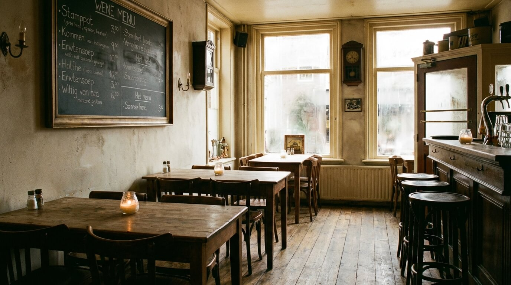
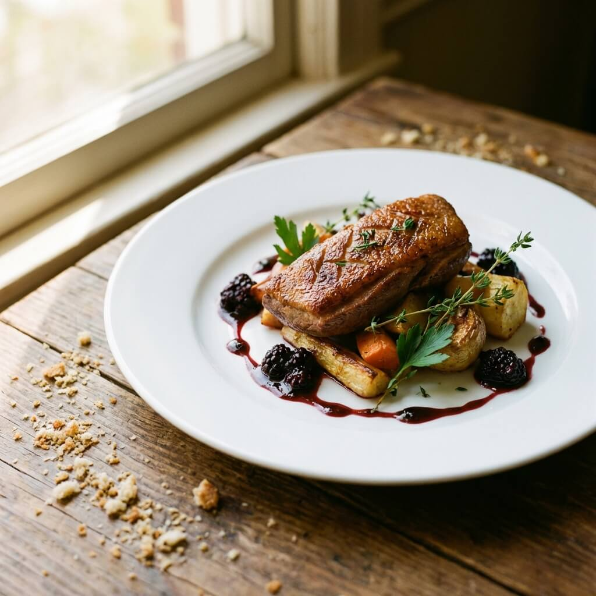
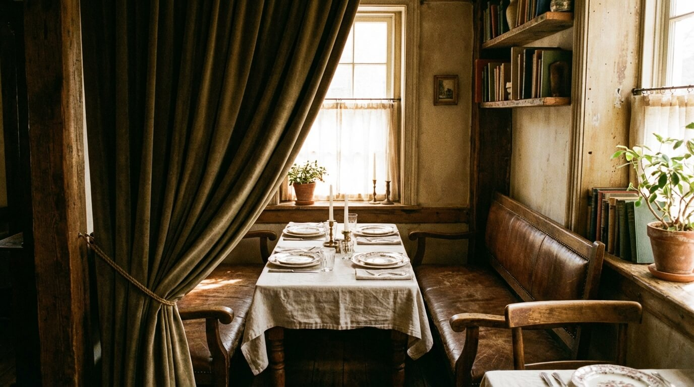

Lente op het Bord: Ons Nieuwe Seizoensmenu
Met wilde kruiden, asperges en jonge geitenkaas viert ons voorjaarsmenu de terugkeer van het licht. Ontdek welke gerechten chef Thomas deze lente heeft bedacht.
Lees meerRecepten, seizoenstips en het verhaal achter elk gerecht. Rechtstreeks uit onze keuken.

Met wilde kruiden, asperges en jonge geitenkaas viert ons voorjaarsmenu de terugkeer van het licht. Ontdek welke gerechten chef Thomas deze lente heeft bedacht.
Lees meer
Om 6 uur op de markt, om 11 uur de eerste mise en place. Volg een dag in het leven van onze hoofdchef en ontdek wat er nodig is om elke avond het beste te serveren.
Lees meer
Onze sommelier legt uit waarom steeds meer gasten kiezen voor ongefiltreerde, biologische wijnen en hoe deze perfect passen bij ons seizoensmenu.
Lees meer
Uren trekken, zorgvuldig reduceren en op het juiste moment afmaken met een klontje boter. Onze chef deelt het recept voor de basis van elk klassiek gerecht.
Lees meer
Wij bezoeken regelmatig onze boeren in Noord-Holland. Lees hoe korte ketens en persoonlijke relaties de kwaliteit van onze gerechten bepalen.
Lees meer
Van het kiezen van het juiste menu tot het samenstellen van de gastenlijst. Onze evenementenmanager deelt haar beste tips voor een onvergetelijke avond.
Lees meerVolg ons op social media voor dagelijkse culinaire updates of reserveer direct een tafel bij ons.
Reserveer Uw Tafel